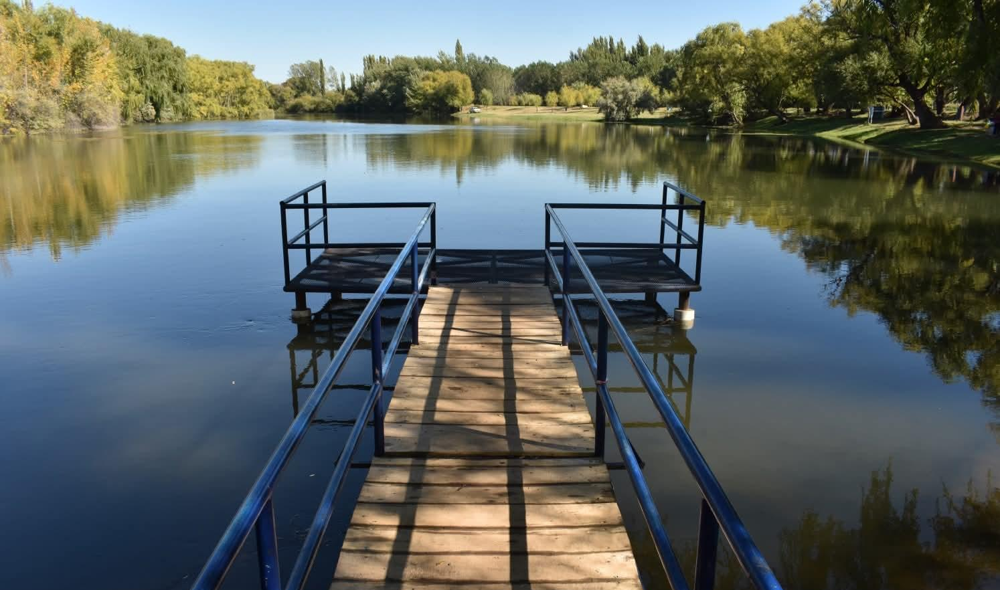

Una mirada sobre nuestra comunidad
Un atardecer que refleja la esencia del Valle Medio
La imagen retrata uno de los paisajes más visitados en Lamarque, donde la tranquilidad del entorno y la presencia del río forman parte de la identidad de la comunidad. Más allá de su valor visual, es un espacio recreativo para pasar el tiempo con familiares y amigos.

Vista del muelle ubicado en el balneario de Lamarque
Fotografía:Katerine Perez.